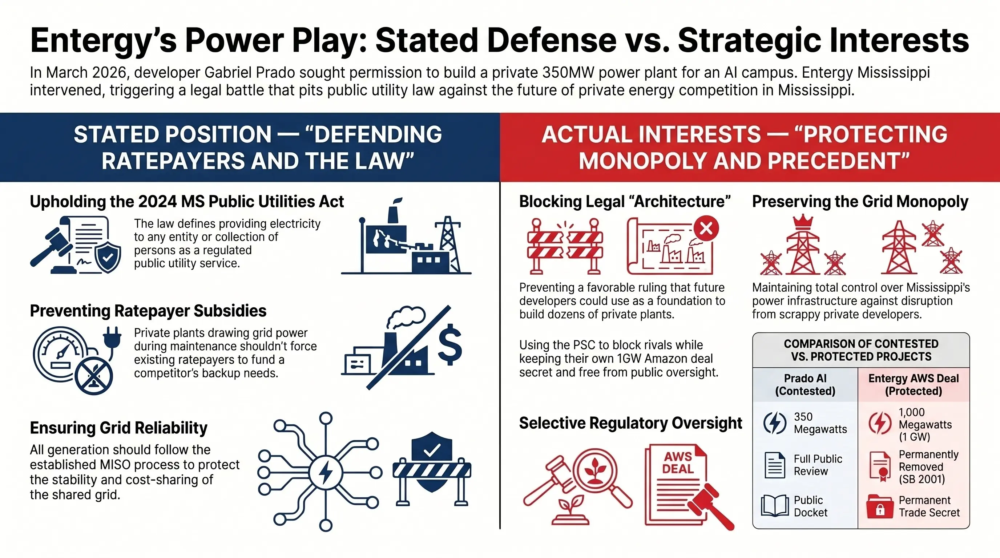
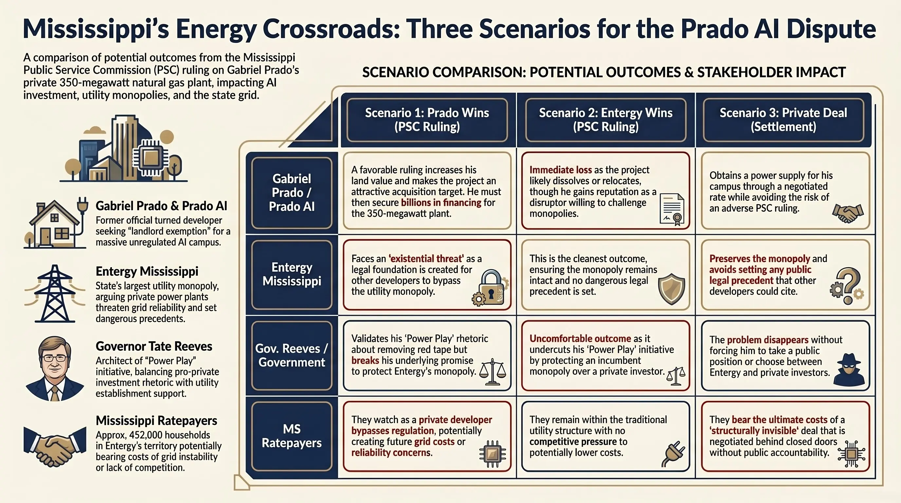

On March 2, 2026, a company called Prado AI Industrial filed a request with the Mississippi Public Service Commission that set off the most consequential energy fight in the state since Senate Bill 2001 handed Amazon a permanent electricity rate secret and stripped ratepayers of regulatory protection. The filing asked a simple question: can a private developer build a 350-megawatt natural gas power plant in Ridgeland, power a data center and semiconductor campus with it, and do all of this without a single permit, rate review, or public hearing? Entergy Mississippi and Mississippi Power said no — loudly, in court filings that land like the opening salvos of a war. Governor Tate Reeves, who has staked his entire political identity on making Mississippi the AI capital of the American South, said nothing at all. And that silence may be the most revealing thing anyone has done in this entire affair.
The story being told in the press is straightforward: a scrappy local developer wants to disrupt the utility monopoly, and the monopoly is fighting back. That story is not wrong. But it is incomplete. Behind it is a more complicated set of interests, incentives, and strategic calculations — none of which have been fully examined by the outlets covering this case. Mississippi Lead spent the past several weeks tracing those interests from their origin points. What we found changes how this fight should be understood.
Who Is Gabriel Prado? The MDA Connection Nobody Is Talking About
Gabriel Prado is described in every news story about this case as "a prominent Mississippi developer" or "the developer behind Ridgeland's TopGolf." Both descriptions are accurate. Neither is the most important thing to know about him.
Before Prado was a developer, he was a government official. He worked at the Mississippi Development Authority (MDA) — first as Latin America Trade Manager, then as Special Projects Officer — the same agency that, as this publication documented in our investigation of the Amazon deal, designed the regulatory and financial conditions that made Mississippi's data center boom possible. In 2019, Prado became the City of Clinton's first full-time Director of Economic Development. In August 2021, he resigned from that post — and within months, PraCon Global Investment Group was in operation.
The path from MDA to private developer is one that Mississippi Lead readers will recognize. It is the same path walked by Gray Swoope, who ran the MDA under Governor Haley Barbour, launched VisionFirst Advisors in 2015, and was in the room at the Fairview Inn in 2017 when Amazon's Mississippi deal began to take shape on a napkin. In Mississippi's economic development ecosystem, the most important credential is not what you have built — it is who you knew when you were inside the machine.
Prado's portfolio reflects this. His first major project, the $60 million redevelopment of the old McRae's building in Fondren, was announced in 2022 with construction expected by end of 2023. Three years later, in September 2025, Prado was still before the Jackson City Council requesting a $1 million tax-increment financing subsidy to provide, in his words, "the final number" needed to push the project forward. The Prado Lofts groundbreaking came only in January 2026 — more than three years after the original announcement. The pattern is consistent: large announcements, political and media attention, public subsidies, delayed execution.
None of this makes Prado unusual in the world of real estate development. Delays are common, financing is complicated, and TIF subsidies are standard tools. What makes the pattern relevant here is that it establishes a baseline against which his most ambitious announcement yet — a 350-megawatt power plant and AI industrial campus — should be evaluated. What the pattern also reveals is the breadth of Prado's political network. Among those who have appeared alongside him at PraCon's Ridgeland offices is John Horhn, who took office as Mayor of Jackson in July 2025. Horhn built his successful mayoral campaign on the argument that Jackson's revival required closer cooperation with the business community — the same community in which Prado operates. The relationship between Jackson's new mayor and a developer with projects on both sides of the Madison-Hinds county line is one this investigation will continue to track.
The Prado AI Filing: What Was Actually Asked
On March 2, 2026, Prado AI Industrial filed a request with the Mississippi PSC under Docket 2026-AD-10. The filing outlined plans to build an advanced industrial campus in Ridgeland — an AI data center, a semiconductor fabrication facility, and a 350-megawatt natural gas-fired power plant to serve both. The power plant would not connect to the existing grid. It would generate electricity exclusively for the campus. Tenants who leased space at the campus would have access to that electricity as part of their lease agreement — not purchased separately, not metered individually, but bundled into the cost of occupancy.
The legal argument was built on a specific provision of Mississippi Code §77-3-3(d)(iv), which exempts from public utility regulation any person who provides electricity "only to himself, his employees or tenants as an incident of such employee service or tenancy, if such services are not sold or resold to such tenants or employees on a metered or consumption basis." Prado AI argued that because tenants would not be separately charged for electricity on a metered basis — they would simply pay rent — the campus qualified for this landlord-tenant exemption. The company asked the PSC to issue a declaratory opinion confirming this interpretation, using Rule 24, a fast-track process that allows no discovery.
Notably, the filing did not disclose the location of the campus beyond "Ridgeland," did not identify any investors or financing sources, and did not name any tenants or potential tenants. Prado later confirmed in press interviews that investor and tenant discussions were "ongoing" with undisclosed groups in New York and San Francisco.
PSC Docket 2026-AD-10: Key Dates
Prado AI Industrial files request for declaratory opinion with the Mississippi PSC.
Mississippi Power Company and Entergy Mississippi file motions to intervene. Cooperative Energy and Delta Mississippi Gas Company follow.
PSC grants motions to intervene and orders all parties to submit briefs by April 13.
Entergy Mississippi files its brief — after the 5 p.m. deadline, records show it was submitted after 7 p.m. Prado AI moves to have Entergy's filing tossed out on procedural grounds.
Prado holds a public press conference in Jackson to announce the PSC filing — six weeks after the filing itself.
Deadline for the PSC's Public Utilities Staff to submit its advisory opinion.
PSC commits to issuing its opinion by this date.
Entergy's Response: Defending the Law, or Defending the Monopoly?
Entergy Mississippi's opposition to the Prado AI filing is legally grounded. The company argues — correctly, based on Mississippi Code — that generating electricity for paying tenants makes Prado AI a public utility by definition, regardless of whether that electricity is separately metered. A 2024 amendment to the Mississippi Public Utilities Act expanded the definition of serving "the public" to explicitly include providing service to "an individual person or an entity or a collection of persons or entities." Under that expanded definition, Entergy argues, even a single industrial tenant qualifies as "the public," and providing electricity to that tenant makes the provider a regulated utility.
Entergy also raises a practical concern that deserves attention. Data centers do not tolerate downtime — even seconds of outage can corrupt operations and cost millions. When Prado AI's gas plant goes offline for maintenance or trips unexpectedly, those AI servers and semiconductor fabs will need power immediately. Where will it come from? The grid — the same grid that Mississippi ratepayers have spent decades financing through their bills. Entergy argues that any future grid interconnection must go through the MISO (Midcontinent Independent System Operator) process, which exists to protect reliability and ensure cost sharing. Allowing Prado AI to build outside that process, then draw on the grid in emergencies, would effectively make ratepayers subsidize a private competitor's backup power supply.
These arguments are legally strong. But they exist alongside a fact that Entergy has not addressed in any public filing: Entergy Mississippi, with the active assistance of the Mississippi Legislature, used Senate Bill 2001 to permanently remove PSC oversight of its own electricity rate agreements with data centers. The company that is now invoking the PSC's authority to block a competitor is the same company that spent years lobbying to reduce that authority over its own dealings. Entergy is not wrong about the law. But it is selectively interested in the law.
There is one more dimension to this relationship that has received no coverage. In November 2025 — four months before Entergy filed its opposition brief — Gabriel Prado and Entergy Mississippi CEO Haley Fisackerly stood on the same stage at the Madison County Business League's annual Vision Awards, each receiving a major award from the same organization. The Madison County Business League's board of directors includes an Entergy Mississippi executive. These are not enemies. They are members of the same civic ecosystem who found themselves on opposite sides of a PSC filing.

Entergy's legal arguments are sound. Its interests are also clear. The two are not the same thing.
Click image to enlarge
Why Entergy Is Not Afraid of 350 Megawatts
The coverage of this dispute has framed it as a fight over a single power plant. That framing misses what is actually at stake for Entergy.
Three hundred and fifty megawatts is a significant installation — larger than most utility peaker plants. But it is not what frightens Entergy. For context: Entergy Mississippi has committed to building one gigawatt of new generation capacity to support Amazon Web Services alone — nearly three times the size of Prado AI's proposed plant. A single data center customer Entergy already has under contract dwarfs everything Prado is proposing to build. The electricity consumption is not the issue.
The issue is precedent. If the PSC rules in Prado AI's favor and declares that a 350-megawatt plant serving paying industrial tenants is not a public utility and requires no CPCN, that ruling becomes a legal foundation that any subsequent developer can cite. The next company that wants to build a private power plant for its data campus does not need to make the legal argument from scratch — it points to Docket 2026-AD-10 and says: the PSC already decided this. Entergy cannot litigate the same question twice with a different outcome.
This is the actual threat: not one plant, but the legal architecture that could make dozens of plants possible. Entergy's monopoly over Mississippi's power grid was built piece by piece over decades through exactly this kind of regulatory precedent. It understands better than anyone how durable a single ruling can be — and how destructive.
Governor Reeves: The Silence That Speaks
Governor Tate Reeves has built his political identity on data center development. He has announced eight data center projects in Mississippi in two years. He called xAI's $20 billion Southaven investment "the largest economic development project in Mississippi history" — then broke his own record weeks later with Amazon's additional $12 billion commitment to Ridgeland and Clinton. He launched Mississippi's Power Play in May 2025, an initiative explicitly designed to "remove red tape" and "stimulate private sector investment" in energy. He gave a speech calling data center moratoriums "civilizational suicide."
And yet, when a Mississippi developer filed a PSC petition arguing — in the name of that same Power Play initiative — that he should be allowed to build private energy infrastructure for a data center, Reeves said nothing. His office has not issued a statement on Docket 2026-AD-10. He has not appeared at Prado's press conferences. He has not weighed in publicly on either side.
This silence is not neutral. It is a calculated position, and its logic is not difficult to trace.
Reeves is caught between two promises he cannot simultaneously keep. The first promise was made to Entergy: we will protect your monopoly, remove PSC oversight from your data center deals, and make you the exclusive power supplier for the most consequential economic development projects in state history. Senate Bill 2001 was the delivery of that promise. The second promise was made to everyone else: Mississippi is open for business, we cut red tape, and private investment is welcome here. Mississippi's Power Play was the delivery of that promise.
Prado AI has exposed the gap between those two promises. If the PSC rules in Prado's favor, Reeves' first promise to Entergy is broken — and the legal architecture underlying the Amazon deal is weakened. If the PSC rules against Prado, Reeves' second promise rings hollow — a governor who claims to remove red tape presided over a regulatory system that blocked a private developer from powering his own campus. Either outcome creates a problem. Silence preserves the ambiguity for as long as possible. The quieter this case resolves, the better for everyone in power.
The Three Scenarios — and What Each One Actually Means
The PSC must issue its opinion by June 1. There are three plausible outcomes, and none of them is straightforward.
Scenario 1: The PSC Rules for Prado AI
If the commission issues the declaratory opinion Prado requested, Prado AI can proceed with its power plant without a CPCN or PSC regulation. For Prado, this is the best outcome in terms of stated goals — but it also means he must now actually build a 350-megawatt gas plant and an AI campus, a capital project of several billion dollars for which no financing has been publicly identified and no tenants have been named. The more durable outcome may be the one less discussed: a favorable ruling dramatically increases the value of Prado's Ridgeland land holdings and makes the entire project — land, permit, legal precedent included — an attractive acquisition target for a well-capitalized buyer. For Entergy, a ruling against them does not destroy the company. But it creates a legal foundation for every subsequent developer who wants to build private power for a data center to use as precedent — and that is the existential threat. For Governor Reeves, this outcome validates his Power Play rhetoric while simultaneously undermining the deal he made with Entergy. His silence during the proceedings will become notable in retrospect.
Scenario 2: The PSC Rules for Entergy
If the commission declines to issue the declaratory opinion, Prado AI cannot proceed with its power plant as structured. The project either dissolves or relocates to a jurisdiction outside Entergy's certificated territory. For Prado, the immediate loss is real — but the strategic position is not as weak as it appears. He has established himself publicly as the developer who "stood up to the monopoly," has generated months of media coverage, and has demonstrated to any investor watching that he is willing to fight in regulatory arenas. The land at Prado Vista retains value regardless of the PSC ruling. For Entergy, this is the cleanest outcome: precedent blocked, monopoly intact, the message sent to any future developer that the company will litigate aggressively to protect its territory. For Reeves, this outcome is uncomfortable — his Power Play initiative is undercut by a ruling that protected an incumbent monopoly over a private investor — but it is manageable, particularly if the case fades from coverage quickly. The quieter the better.
Scenario 3: A Private Settlement Before June 1
This is the most likely outcome, and the one that serves the most powerful interests in the room. Before the PSC issues its opinion, Prado AI and Entergy reach a private agreement — Entergy provides electricity to the Prado campus at a negotiated rate, Prado withdraws the PSC petition, and the case closes without a ruling. No precedent is set. No public record of the terms exists. The deal mirrors the structure of every other major energy agreement that has shaped Mississippi's data center economy: privately negotiated, publicly unaccountable, structurally invisible to the ratepayers who ultimately bear its costs. For Prado, this outcome delivers what a favorable PSC ruling would deliver in practical terms — a power supply for his campus — without the risk of an adverse ruling. For Entergy, it preserves the monopoly and avoids precedent. For Reeves, it makes the problem disappear without forcing him to take a public position. For everyone watching this case and hoping to understand what it means for Mississippi's energy future: it means nothing. No ruling, no record, no accountability. The machine prefers its negotiations behind closed doors.

In every scenario, Mississippi ratepayers are either watching or paying. No scenario puts them at the table.
Click image to enlarge
The Pattern This Case Fits
Mississippi Lead readers who followed our investigation into the Amazon data center deal will recognize the contours of what is happening here. The specific actors are different. The specific legal mechanism is different. The underlying structure is identical.
In the Amazon case, the key players negotiated a $25 billion deal in private, passed enabling legislation in 48 hours with minimal public review, permanently removed PSC oversight from the state's largest utility agreement in history, and delivered the result in the form of press conferences and ribbon cuttings that made it look like economic triumph. The beneficiaries of that arrangement — Amazon, Entergy, and the network of consultants and connected firms who designed and executed it — were clear. The costs — to ratepayers, to Jackson residents who watched $215 million in infrastructure go to Madison County while their own water system failed, to the 544,000 Mississippians living in poverty who will never access the jobs being promised — were distributed broadly and largely invisibly.
The Prado AI case is smaller in scale but identical in structure. A private developer with government connections seeks a regulatory ruling that would reshape the energy market. The largest incumbent utility fights to preserve arrangements that protect its revenue model. The governor who created the political conditions for both sides of this fight has gone silent to avoid choosing between them. And the PSC — the one institution specifically created to protect the public interest in utility regulation — is being asked to adjudicate a question that the most powerful parties in the room would prefer to resolve privately, without a ruling, without a record, and without the public watching.
If Scenario 3 comes to pass — as this investigation assesses most likely — the case will close without illuminating any of the questions it raised. Who are Prado's investors? What terms did he reach with Entergy? What rate would the campus have paid? What would a favorable ruling have meant for residential electricity bills in Ridgeland and across the state? These questions will not be answered in a settlement. They will simply stop being asked.
What Mississippi Lead Will Continue to Watch
This investigation will track Docket 2026-AD-10 through its resolution. Specifically, we are watching for: any withdrawal of the petition before June 1, which would signal a private settlement; the content of the Public Utilities Staff advisory opinion due May 15; any public statements from Governor Reeves or his office on the case; and any filings in the docket that identify Prado AI's investors or tenants by name.
We are also continuing to investigate PraCon Global Investment Group's project history — specifically the gap between announced projects and completed ones, the sources of financing for the projects that have been built, and the network of public subsidies, TIF agreements, and government partnerships that have supported Prado's development portfolio. That investigation is ongoing.
The Mississippi Public Service Commission is a public body. Its docket is public. The question it is being asked to decide — who gets to generate electricity in Mississippi, under what conditions, and accountable to whom — is a question that affects every ratepayer in the state. It should be answered in public, on the record, with a written opinion that can be cited, challenged, and built upon. Mississippi Lead will report that answer when it comes. And if the question is resolved in private, behind a settlement agreement that no one is required to disclose, we will report that too.
A Note on What We Don't Know
Prado AI's March 2 PSC filing does not disclose the identity of its investors or prospective tenants. Prado confirmed in press interviews that he would not disclose those details pending the PSC ruling. The full terms of Mississippi's energy agreements with Amazon Web Services remain a permanent trade secret under SB 2001 and cannot be obtained through public records requests. This article will be updated to reflect material developments in Docket 2026-AD-10.
The Numbers Behind the Story
| Data Point | Figure | Source |
|---|---|---|
| Prado AI proposed power plant capacity | 350 megawatts | PSC Docket 2026-AD-10 |
| Entergy Mississippi new capacity committed for AWS | 1,000 megawatts (1 GW) | Site Selection Magazine, May 2025 |
| Entergy stock increase following Amazon announcements | ~$13 billion | Mississippi Lead / The Dispatch |
| Amazon's total Mississippi investment commitment | $25 billion | Governor's office, April 2026 |
| State infrastructure investment in Madison County for AWS | $215 million | SB 2001 / Mississippi Today |
| Prado Lofts (McRae's) — announced investment | $60 million (2022) | WLBT, August 2022 |
| Prado Lofts — TIF subsidy approved by Jackson City Council | $1 million (2025) | WLBT, September 2025 |
| Years between McRae's announcement and groundbreaking | 3+ years | Mississippi Lead analysis |
| PSC opinion deadline — Docket 2026-AD-10 | June 1, 2026 | PSC order, April 2026 |
| Mississippi households in Entergy's service territory | ~452,000 | Entergy Mississippi annual report |
| Mississippi residents below poverty line | ~544,000 (18%) | U.S. Census Bureau, 2024 |
Sources
1. Mississippi Today — Ridgeland data center faces Mississippi energy giants' opposition, April 22, 2026· 2. WLBT — Jackson developer seeks PSC ruling for electric plant, April 22, 2026· 3. Jackson Jambalaya — Data Center Project Turns into a Power Struggle, April 2026· 4. The Enterprise Journal — Off the grid puts others on the hook, April 2026· 5. Mississippi Public Service Commission — Docket 2026-AD-10· 6. Site Selection Magazine — Mississippi's Power Play, May 2025· 7. WLBT — Council approves $1M in tax incentives for Fondren loft project, September 2025· 8. WLBT — 215-unit high-end loft development coming to North Fondren, August 2022· 9. Madison County EDA — Conference Center at Prado Vista, February 2026· 10. Online Madison — 17th Annual Vision Celebration, November 2025· 11. The Clinton Courier — Prado resigns from economic development post, September 2021· 12. Mississippi Today — Reeves' top donors received $1.4 billion in state contracts, October 2023· 13. Data Center Dynamics — Reeves calls data center moratoria "civilizational suicide," April 2026· 14. Mississippi Lead — The $25 Billion Deal Mississippi Taxpayers Never Voted For, April 2026· 15. PraCon Global Investment Group — Team page· 16. Entergy Mississippi — Superpower Mississippi initiative, March 2026
This investigation reflects publicly available information as of April 24, 2026, drawn from PSC filings, public records, press interviews, and published reporting. Mississippi Lead does not accept payment for coverage of any company, individual, or government body referenced in this article. This article will be updated to reflect material developments in PSC Docket 2026-AD-10.